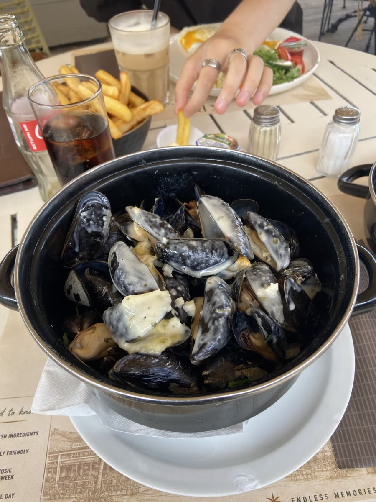
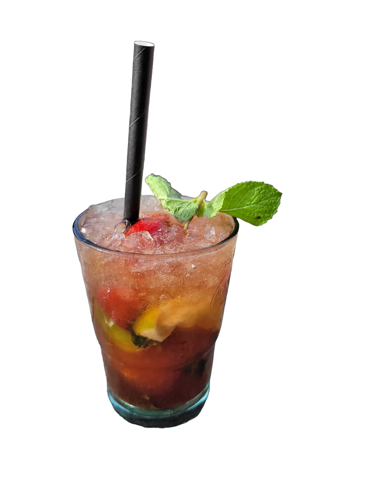
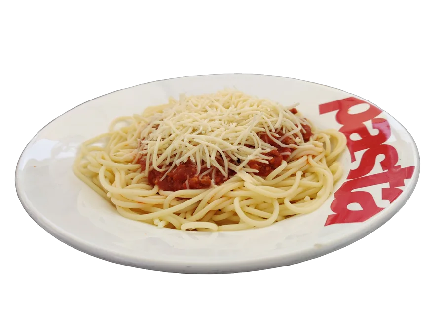
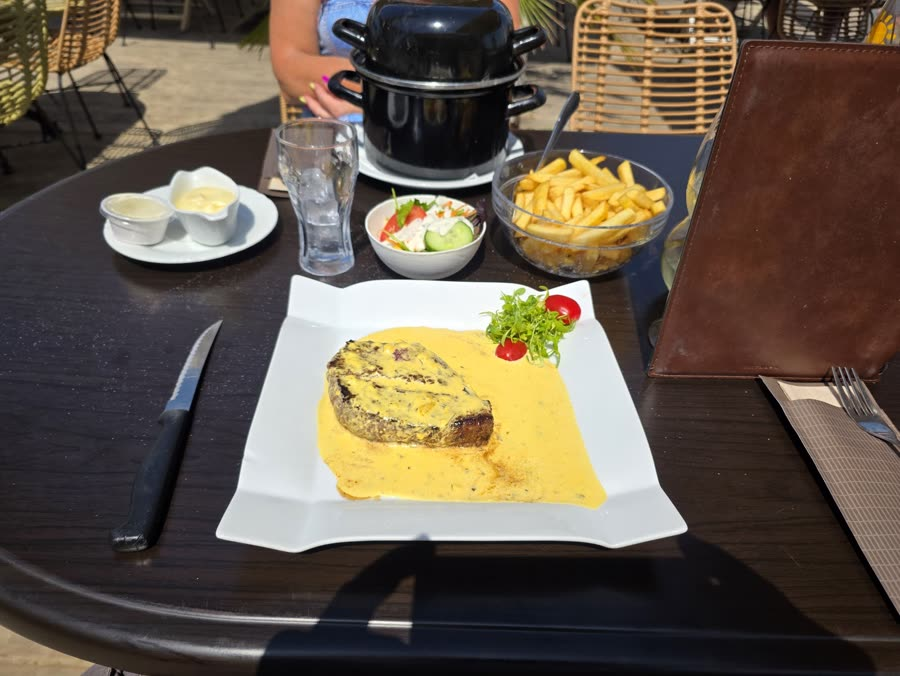
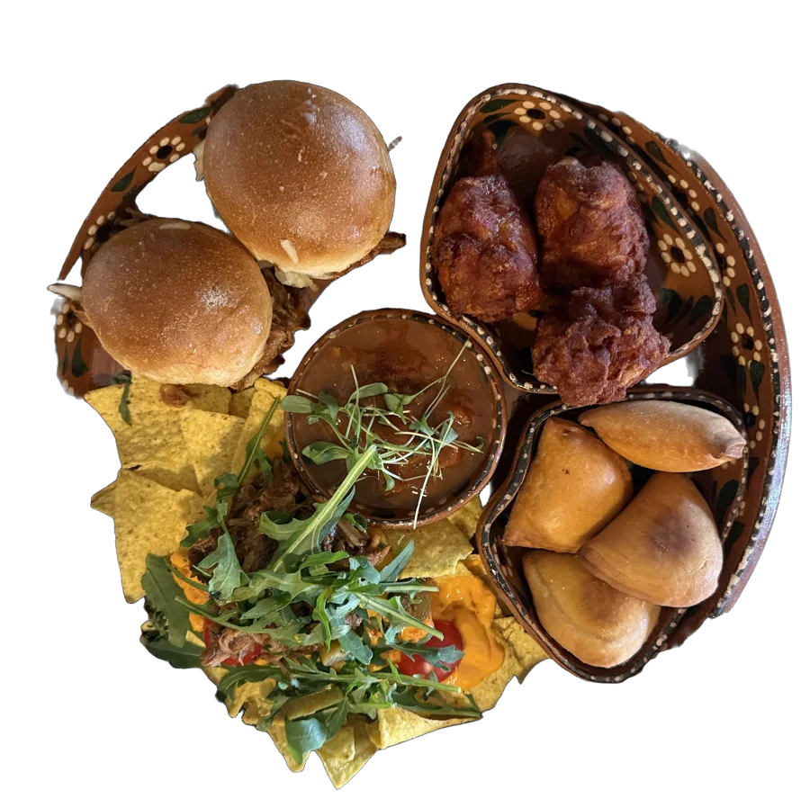
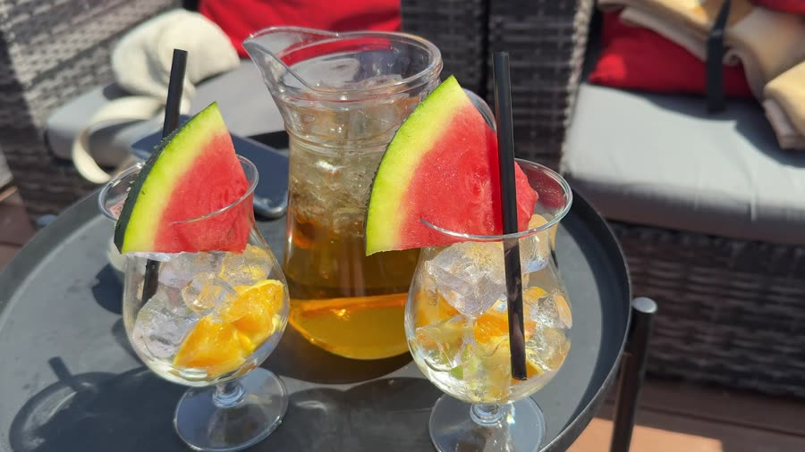
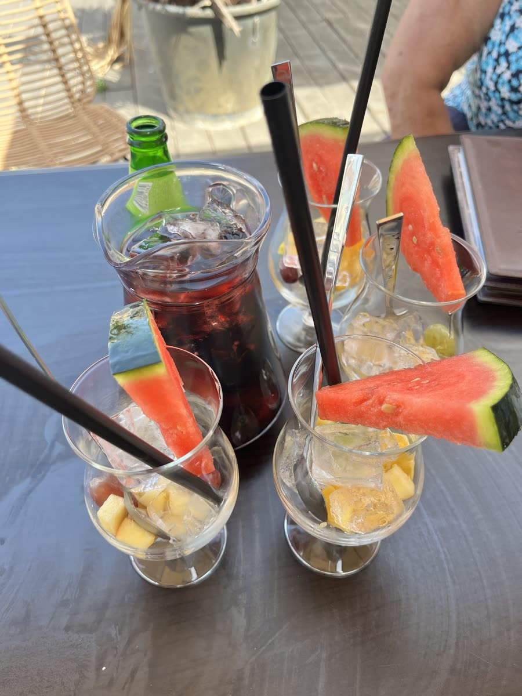
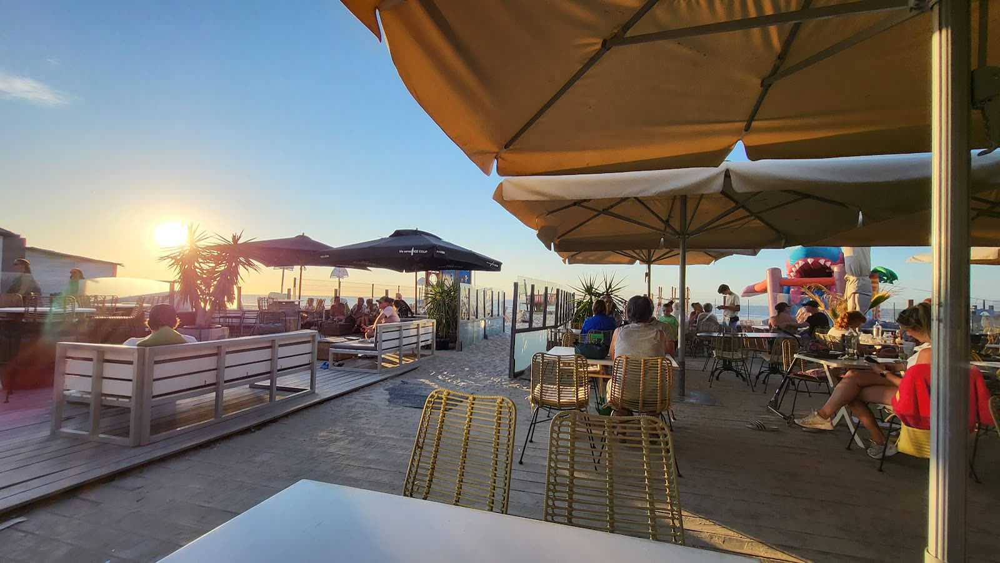
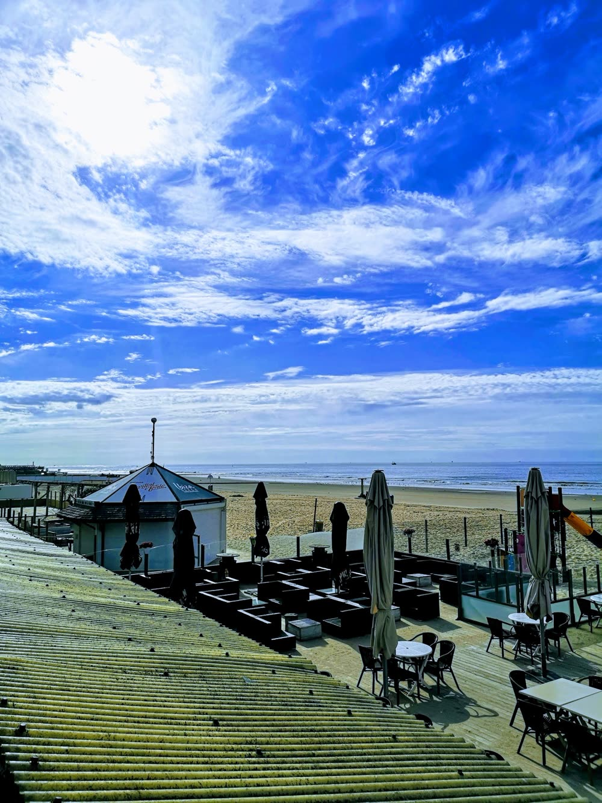
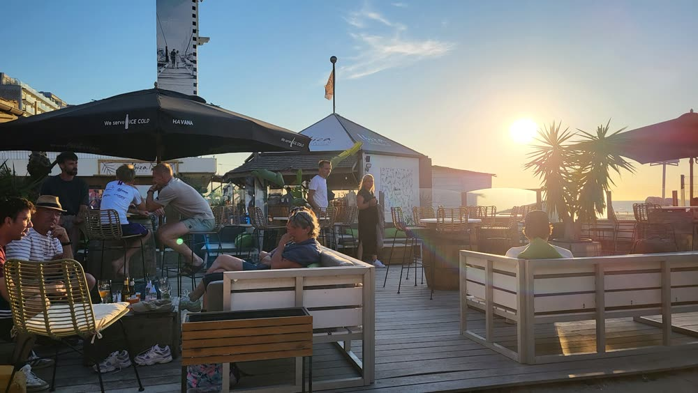

Mosselen
Een pot mosselen met frietjes, zoals het hoort aan zee.
Beach club en brasserie in King Beach Village, Blankenberge
Ontbijt, lunch, diner en tapas op een groot terras aan zee, met een afgesloten speeltuin voor de kinderen.

Belgische klassiekers, gerechten van de grill, zeevruchten en tapas om te delen. Ook veel gerechten en ijsjes voor de kinderen.

Een pot mosselen met frietjes, zoals het hoort aan zee.

Een klassieker, ook voor de kinderen.

Van de grill, met frietjes en salade.

Om samen van te nemen bij een drankje op het terras.

In een karaf, met een schijf watermeloen.

Voor bij de zonsondergang.
Ook ontbijt, pannenkoeken, wafels, desserts en suggesties van het seizoen.

Een drankje na het strand, een salsa-avond of een zomerse avond met vrienden. Het terras ligt recht aan zee.
Gezinnen komen voor de afgesloten speeltuin en het springkasteel, vrienden voor de cocktails en de salsa-avonden. Iedereen blijft voor de zonsondergang.


“Een verborgen parel aan de kust. Heerlijke mosselen gegeten, lekkere sangria en een toffe afgesloten speeltuin voor de kinderen”
“Lekker gegeten op een mooi terras. Vriendelijke en vlotte service en de kinderen konden zonder zorgen spelen op het grote, afgebakende speelplein en springkasteel!”
“Heerlijke strandtent, vlotte bediening, en altijd wat chips of nootjes bij je drankje.”
Zeedijk 280, 8370 Blankenberge
+32 470 51 83 75
Op donderdag gesloten. Salsa-avonden en zomerevents: vraag ernaar of bel ons.